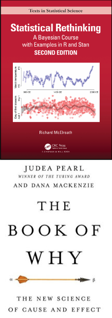
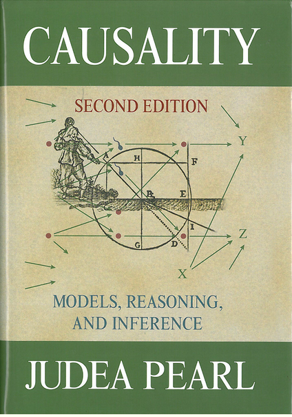
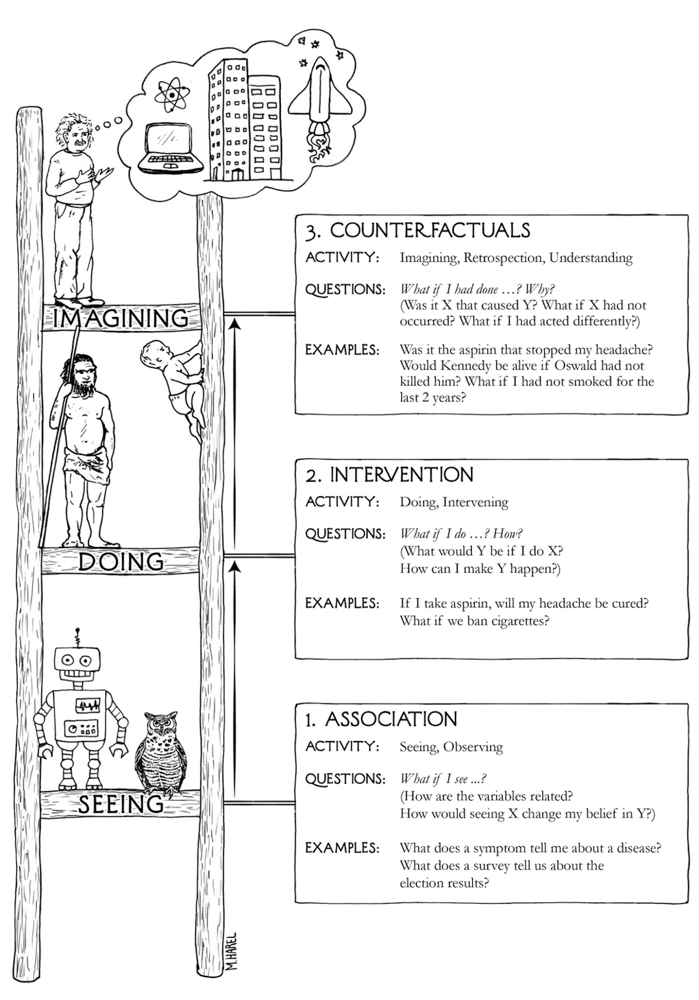
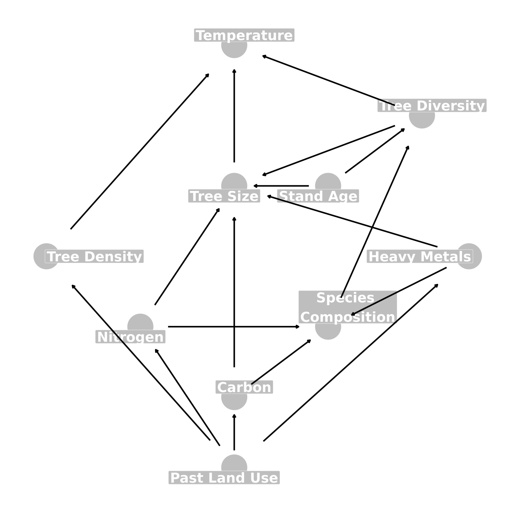
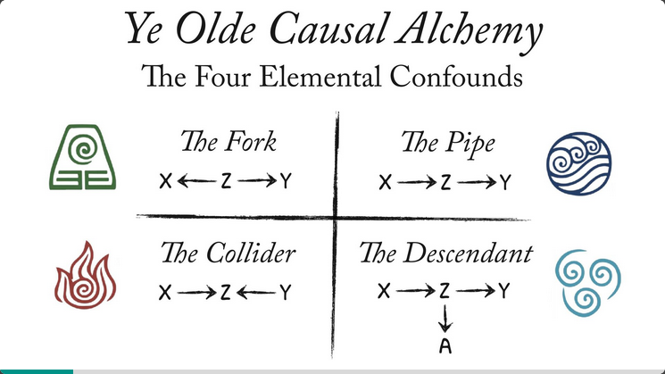

Causal Inference & DAGs
2025-03-11
This workshop is plagiarism!!
- almost all of this content comes from Statistical Rethinking, a textbook and online course that is completely free and available by Richard McElreath
- a good portion also comes from The Book of Why and other works by Judea Pearl
- there are many scholars, ecologists and otherwise who use this method and explain it better than I ever will - resources at the end

Let’s not panic
the beauty of causal inference is that it relies on concepts that come very naturally to the human brain and is founded on using the expert scientific knowledge that every scientist brings to their studies
THIS DOES NOT CHANGE EVERYTHING - just gives you a framework to easily express what you already feel and know
What is causal inference?
the study of causes and effects: does X cause a change in Y?
is this different from correlation?
- a rooster cawing is highly correlated with the sun rise - did the rooster cause the sun to rise?
- https://www.tylervigen.com/spurious-correlations


Why don’t we talk or learn about causation?
Pearson & Galton, founders of modern statistics, failed in creating the tools needed for causal inference and subsequently decided that it was impossible and “unscientific”
- they used their enormous influence to teach generations of scientists this and attack anyone who opposed them
Judea Pearl invented the math required to answer causal questions only ~ 40 years ago! Science is slow!
causation is not controversial - we are just transitioning
What is causal inference NOT?
prediction!! forecasting!!
if we want to use our models to estimate data in places or times that we do not have data for, but we DO NOT CARE about the relationships between the things in our model, that is prediction and not causal inference
prediction is cool!! it is however, not what we do in our lab (for now…)
AIC is a tool for measuring the predictive power of your model - it is not appropriate for our purposes
Who uses causal inference?
- Ecology: Arif & MacNeil 2022, Siegel & Dee, 2025, Laubach et al, 2021
- Public health: Glass et al, 2013, Matthay & Glymour, 2022
- Sociologists & ethnography: Knight & Winship 2013, Brett & Silver 2024, Snodgrass et al 2024
- Machine learning
Anyone who has observational data (and sometimes experimental data) and wants to understand a cause and effect relationship in their system
When do people use causal inference?
Level 1: association
how are the variables related? how does changing X shift my belief in Y?
example: what does canopy cover tell us about air temperature?

When do people use causal inference?
Level 2: intervention
what would Y be if i do X?
example: how will bird species richness increase if i move from a park to a backyard?
When do people use causal inference?
Level 3: counterfactuals
what if X had not occurred? is it X that caused Y?
example: would survey respondents prefer different green space features if they lived in a different borough?
How do I do causal inference?
DAGs (directed acyclic graphs)!
arrows indicate a causal relationship from one variable to another
use your expert knowledge + literature to outline your system with your hypotheses and assumptions (you already make assumptions now, you just don’t visualize them!)
adjust your statistical test (e.g., model) using your DAG

Why do DAGs matter?
putting everything in your model does not test the relationship(s) you are interested in
- complex systems have confounders that mislead us and that we need to adjust for
- adjustments are dependent on our DAG and the variable of interest
